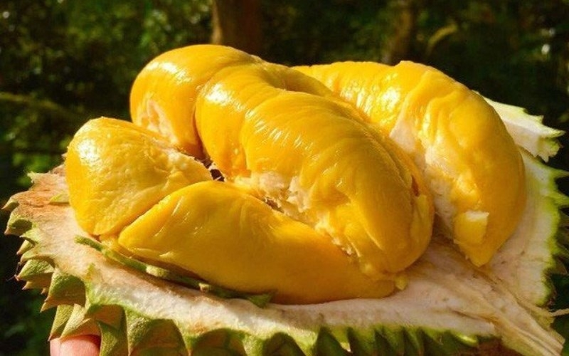
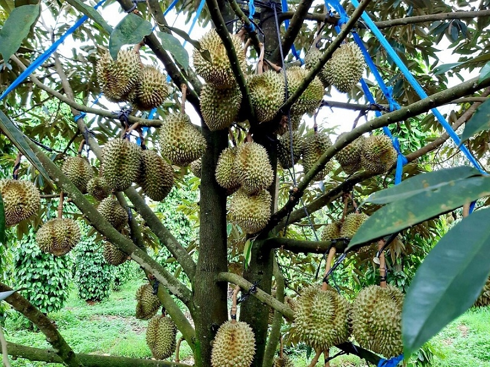
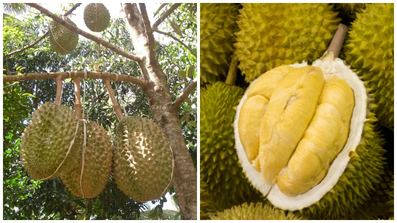
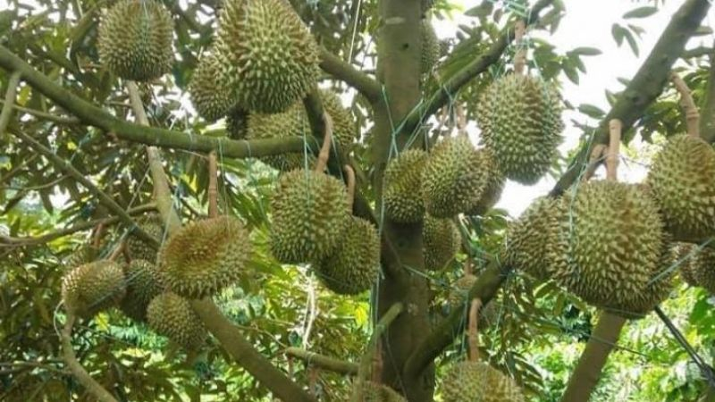
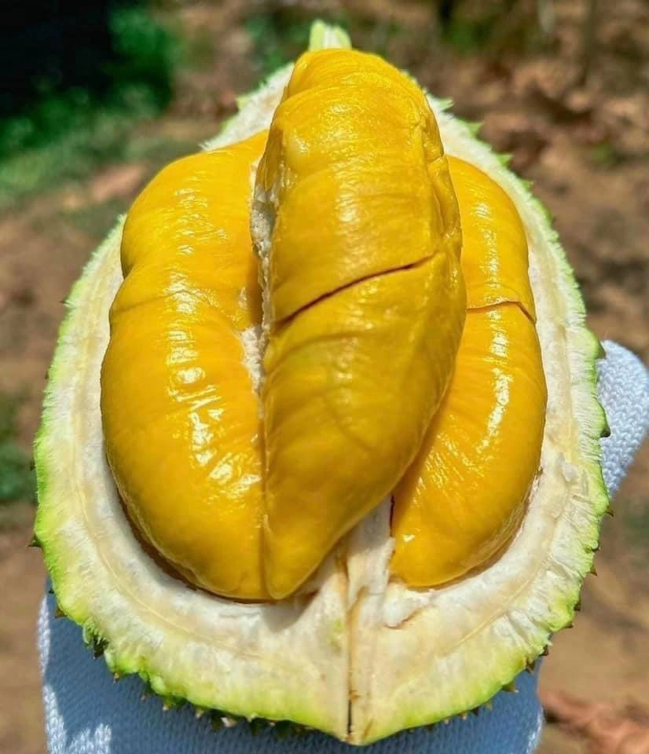
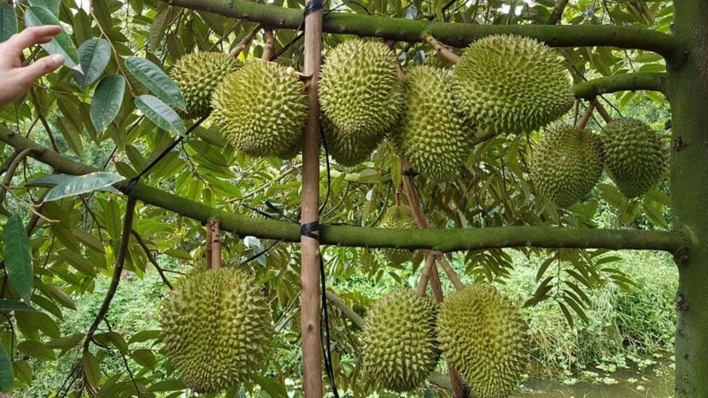
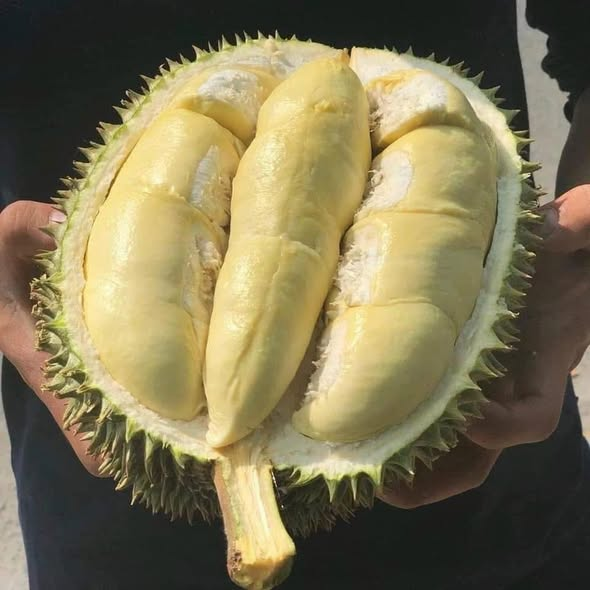

Các giống sầu riêng cao cấp được trồng tại vùng đất Tây Nguyên.


160.000 VNĐ / kg
Giống nội địa nổi tiếng nhất. Cơm vàng đậm, vị béo ngọt đặc trưng, hạt lép.

180.000 VNĐ / kg
Giống nhập khẩu cao cấp từ Thái Lan. Trái lớn, cơm dày, vị ngọt dịu.


350.000 VNĐ / kg
"Vua sầu riêng". Cơm vàng ốc, vị béo đậm đặc biệt, mùi thơm nồng.


140.000 VNĐ / kg
Giống truyền thống vùng Tây Nguyên. Vị thanh, thơm đậm, cơm mềm dẻo.